二階微分方程
📌 本章要解決的核心問題
一階微分方程只能描述最簡單的變化率問題。當系統涉及加速度——例如彈簧的振動、RLC 電路的電流變化、或是摩托車懸吊系統的運動——我們需要二階微分方程。本章系統性地建立求解二階線性微分方程的方法，從齊次方程的特徵方程式法，到非齊次方程的待定係數法與參數變異法，再到簡諧運動、阻尼振動、強迫振動以及RLC 串聯電路的實際建模應用。
🔑 關鍵概念（10 條）
- 線性與齊次性：二階方程 $a_2(x)y''+a_1(x)y'+a_0(x)y=r(x)$ 中，$r(x)=0$ 為齊次，$r(x)\neq 0$ 為非齊次
- 疊加原理：若 $y_1,y_2$ 是齊次線性方程的解，則 $y=c_1y_1+c_2y_2$ 也是解
- 線性獨立：兩個解必須不成常數倍數關係，才能構成通解
- 特徵方程式：對 $ay''+by'+cy=0$，特徵方程式為 $a\lambda^2+b\lambda+c=0$
- 三種根 → 三種通解形式：相異實根（指數）、重根（$xe^{\lambda x}$）、共軛複根（正弦/餘弦）
- 非齊次通解結構：$y=y_c+y_p$（互補解 + 特解）
- 待定係數法：當 $r(x)$ 是多項式/指數/正弦餘弦時，猜測同形式的特解
- 參數變異法：當待定係數法不適用時，令 $y_p=u(x)y_1+v(x)y_2$
- 簡諧運動：$my''+ky=0$ 的解為 $y=c_1\cos(\omega t)+c_2\sin(\omega t)$，$\omega=\sqrt{k/m}$
- 阻尼判別：$b^2-4mk$ 的正負決定過阻尼、臨界阻尼或欠阻尼
🧭 本章推理地圖
牛頓第二定律 F = mx″ 產生二階微分方程（§7.1） → 齊次方程 ay″+by′+cy=0（§7.1）：特徵方程式的三種根 → 三種通解形式 → 初值問題 vs 邊值問題（§7.1）：不同物理情境對應不同條件 → 非齊次方程（§7.2）：外力項 = 特解 + 齊次通解 → 解法：待定係數法（多項式／指數／三角強迫）＋ 參數變異法（通用） → 物理應用（§7.3）：簡諧運動 → 阻尼振動 → 強迫振動 → 共振 → RLC 電路 → 級數解法（§7.4）用冪級數處理變係數方程（Bessel、Legendre）
7.1 二階線性方程（Second-Order Linear Equations）
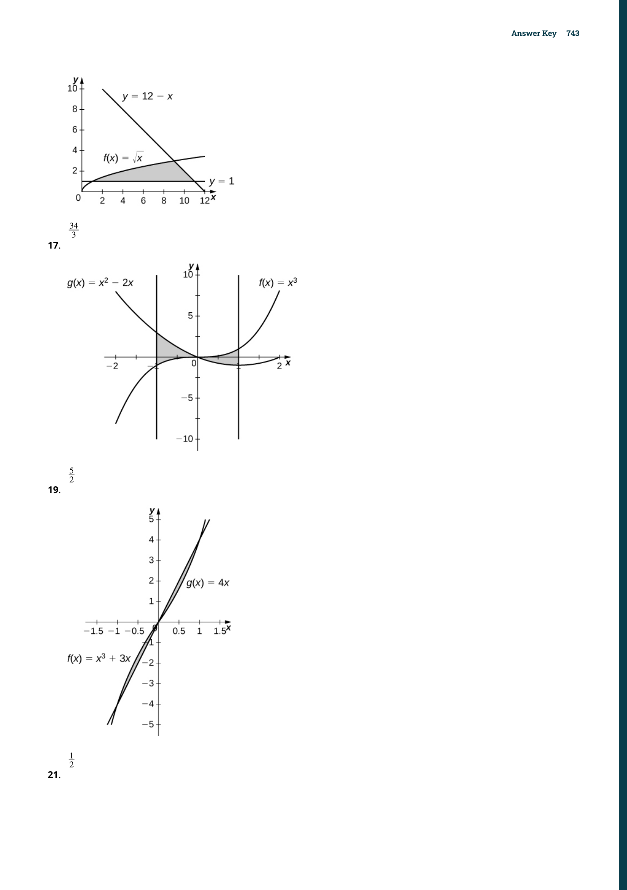
在微分方程的世界中，二階方程是一階方程的自然延伸。回顧一階方程中我們討論了可分離變數法和積分因子法，而二階方程的解法則完全不同——它們的核心思想是利用特徵方程式（characteristic equation）將微分方程轉化為代數問題。這個想法的美妙之處在於：它讓我們不需要做任何積分就能找到通解。
齊次線性方程（Homogeneous Linear Equations）
一個二階微分方程被稱為線性（linear），如果它可以寫成以下標準形式：
當 $r(x)=0$（即對所有 $x$ 都成立），我們稱之為齊次線性方程（homogeneous linear equation）。當 $r(x)\neq 0$（對某些 $x$），則為非齊次線性方程（nonhomogeneous linear equation）。關鍵判斷標準是：方程中 $y$ 及其導數只能以一次冪出現，且不能互相乘在一起。像 $(y')^2$、$\sin y$、$yy'$ 這些項的出現立即宣告方程為非線性。
這個分類不僅僅是學術名詞。齊次方程有一整套基於特徵方程式的優雅解法，而非齊次方程則需要先解對應的齊次方程（稱為互補方程），再找一個特解。可以說：齊次方程是非齊次方程的「骨架」——掌握了前者，後者就變成在骨架上加一層「肌肉」。
要找到二階齊次線性方程的通解，我們需要兩個線性獨立（linearly independent）的解。所謂線性獨立，直觀上就是兩個解的比值不是常數——例如 $e^{2x}$ 和 $e^{3x}$ 是線性獨立的（因為 $e^{3x}/e^{2x}=e^x$，不是常數），但 $e^{2x}$ 和 $3e^{2x}$ 是線性相依的（因為後者是前者的常數倍）。
若 $y_1$ 和 $y_2$ 是齊次線性微分方程的解，則對任意常數 $c_1$、$c_2$，
也是一個解。且若 $y_1$ 和 $y_2$ 線性獨立，則此即為通解（general solution）。
📝 範例 7.4：判別線性獨立性
判斷以下函數對是否線性獨立：(a) $f(x)=\sin 2x$，$g(x)=\sin x\cos x$
(b) $f(x)=e^{2x}$，$g(x)=e^{3x}$
(c) $f(x)=x^2$，$g(x)=x^3$
解：
(a) $\sin 2x = 2\sin x\cos x = 2g(x)$，兩者差一個常數倍 → 線性相依
(b) 沒有任何常數 $C$ 使 $e^{3x}=C\cdot e^{2x}$ 對所有 $x$ 成立 → 線性獨立
(c) $x^3/x^2=x$ 不是常數 → 線性獨立
常係數齊次方程與特徵方程式
當係數全部為常數時——即 $ay''+by'+cy=0$（其中 $a,b,c$ 為常數且 $a\neq 0$）——我們可以使用一個極其強大的技巧：猜測解的形式為指數函數。為什麼是指數？因為指數函數的導數是自身的常數倍：若 $y=e^{\lambda x}$，則 $y'=\lambda e^{\lambda x}$、$y''=\lambda^2 e^{\lambda x}$。代入原方程後，$e^{\lambda x}$ 可以因式分解出來，留下一個關於 $\lambda$ 的代數方程式：
特徵方程式的根有三種可能，對應三種完全不同的通解形式。這三種情況構成了本章最核心的知識骨架：
| 判別式 | 根的形式 | 通解 |
|---|---|---|
| $b^2-4ac > 0$ | 兩相異實根 $\lambda_1 \neq \lambda_2$ | $y = c_1 e^{\lambda_1 x} + c_2 e^{\lambda_2 x}$ |
| $b^2-4ac = 0$ | 一個重根 $\lambda$ | $y = c_1 e^{\lambda x} + c_2 x e^{\lambda x}$ |
| $b^2-4ac < 0$ | 共軛複根 $\alpha \pm i\beta$ | $y = e^{\alpha x}\big(c_1\cos(\beta x) + c_2\sin(\beta x)\big)$ |
最常見的錯誤是：當特徵方程式有重根時，只寫出 $y=c_1e^{\lambda x}$ 而忘記還需要 $c_2 x e^{\lambda x}$ 項。記住：二階方程的通解一定包含兩個獨立的任意常數。如果只有一個 $c_1$，那你只找到了一半的解。$xe^{\lambda x}$ 這個「多出來的 $x$」正是重根情況的關鍵——它保證了第二個解的線性獨立性。
📐 推導：重根情況為何出現 $xe^{\lambda x}$？
$y'=e^{\lambda x}+\lambda x e^{\lambda x}$，$y''=2\lambda e^{\lambda x}+\lambda^2 x e^{\lambda x}$
代入 $ay''+by'+cy$，合併各項後，利用 $\lambda=-b/(2a)$ 和 $b^2=4ac$ 的關係，所有含 $x$ 的項互相抵消，常數項也為零——因此 $xe^{\lambda x}$ 確實是解，且它與 $e^{\lambda x}$ 顯然線性獨立。
📝 範例 7.6：三種情況綜合演練
求以下各微分方程的通解：(a) $y''+5y'+6y=0$
(b) $y''+2y'+5y=0$
(c) $y''-6y'+9y=0$
解：
(a) 特徵方程：$\lambda^2+5\lambda+6=0$ → $(\lambda+2)(\lambda+3)=0$ → $\lambda_1=-2,\lambda_2=-3$。通解：$y=c_1e^{-2x}+c_2e^{-3x}$
(b) 特徵方程：$\lambda^2+2\lambda+5=0$ → $\lambda=-1\pm 2i$。這裡 $\alpha=-1$、$\beta=2$。通解：$y=e^{-x}(c_1\cos 2x+c_2\sin 2x)$
(c) 特徵方程：$\lambda^2-6\lambda+9=0$ → $(\lambda-3)^2=0$ → $\lambda=3$（重根）。通解：$y=c_1e^{3x}+c_2xe^{3x}$
初值問題與邊值問題
通解包含兩個任意常數 $c_1$ 和 $c_2$，這意味著我們需要兩個條件來確定它們。當這兩個條件都在同一個 $x$ 值處給出（例如 $y(0)=y_0$ 和 $y'(0)=v_0$），我們稱為初值問題（initial-value problem, IVP）。當條件在兩個不同的 $x$ 值處給出（例如 $y(0)=a$ 和 $y(L)=b$），則稱為邊值問題（boundary-value problem, BVP）。
對於常係數二階線性方程，初值問題總是有唯一解（只要兩個初始條件都給了）。但邊值問題可能：有唯一解、有無限多組解、或者完全無解。這是因為邊界條件可能與方程的通解結構「不匹配」。例：$y''+y=0$（通解 $y=c_1\cos x+c_2\sin x$），邊界條件 $y(0)=0$ 給出 $c_1=0$，$y(\pi)=0$ 則自動成立對任何 $c_2$——無限多解。但若邊界條件是 $y(0)=0$、$y(\pi)=1$，則無解（因為 $\sin\pi=0$）。
📝 範例 7.9：彈簧-質量系統初值問題
解初值問題 $y''+6y'+9y=0$，$y(0)=0$，$y'(0)=2$。求 $t=1$ 時的位置和速度。解：特徵方程 $\lambda^2+6\lambda+9=0$ → $(\lambda+3)^2=0$ → $\lambda=-3$（重根）。通解：$y=c_1e^{-3t}+c_2te^{-3t}$。
$y'=-3c_1e^{-3t}+c_2e^{-3t}-3c_2te^{-3t}$。
代入 $y(0)=0$：$c_1=0$。代入 $y'(0)=2$：$-3c_1+c_2=2$ → $c_2=2$。
因此 $y(t)=2te^{-3t}$，$y'(t)=2e^{-3t}-6te^{-3t}$。
$t=1$ 時：$y(1)=2e^{-3}\approx 0.0996$ m，$y'(1)=(2-6)e^{-3}=-4e^{-3}\approx -0.199$ m/s（向上）。
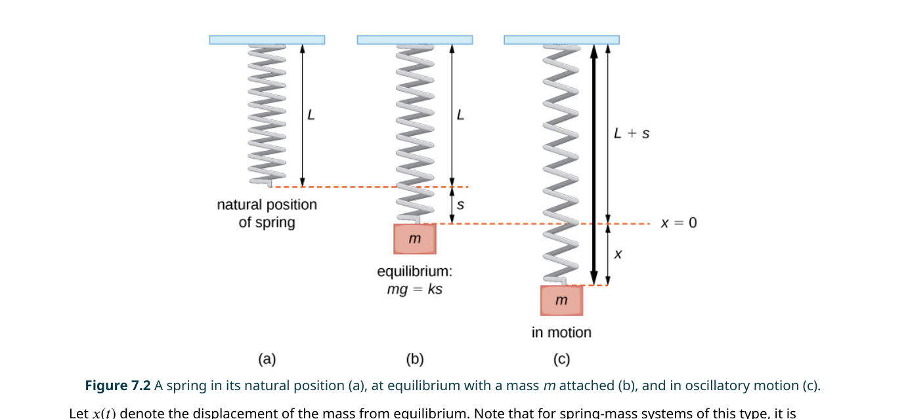
7.2 非齊次線性方程（Nonhomogeneous Linear Equations）
當微分方程的右側不是零，而是某個函數 $r(x)$（稱為強迫項（forcing term）或非齊次項），我們就需要全新的技術。好消息是：非齊次方程的通解有一個非常簡單的結構
互補解 $y_c$ 我們已經會在 7.1 節中求了（透過特徵方程式）。所以本節的核心任務是：找到一個特解 $y_p$。我們介紹兩種方法——待定係數法（適用於特定形式的 $r(x)$）和參數變異法（通用但較繁瑣）。
方法一：待定係數法（Method of Undetermined Coefficients）
當 $r(x)$ 是多項式、指數函數、正弦、餘弦或其乘積時，我們可以「猜測」$y_p$ 的形式，然後代入方程求解未知係數。這之所以可行，是因為這些函數的導數仍然是同類型的函數——多項式求導仍是多項式、$e^{kx}$ 的導數仍是 $e^{kx}$ 的倍數、$\sin kx$ 和 $\cos kx$ 的導數也還是正弦和餘弦的組合。
| $r(x)$ 的形式 | $y_p$ 的初始猜測 |
|---|---|
| 常數 $k$ | $A$（常數） |
| $ax+b$ | $Ax+B$ |
| $ax^2+bx+c$ | $Ax^2+Bx+C$ |
| $e^{kx}$ | $Ae^{kx}$ |
| $\sin kx$ 或 $\cos kx$ | $A\cos kx + B\sin kx$（兩項都要！） |
| $e^{kx}\sin mx$ 或 $e^{kx}\cos mx$ | $e^{kx}(A\cos mx + B\sin mx)$ |
| 多項式 $\times$ 指數 | 同次數多項式 $\times$ 指數 |
如果你猜測的 $y_p$ 形式恰好是互補解 $y_c$ 的一部分，那麼代入方程後所有項會互相抵消，你得不到任何關於係數的資訊。此時你需要將猜測乘以 $x$（如果還是撞車，就乘以 $x^2$，依此類推）。例如：$y''-4y'+4y=e^{2x}$。互補解是 $y_c=c_1e^{2x}+c_2xe^{2x}$。若你猜 $y_p=Ae^{2x}$，它和 $y_c$ 中的 $c_1e^{2x}$ 撞車；乘以 $x$ 後的 $Axe^{2x}$ 又和 $c_2xe^{2x}$ 撞車；必須再乘以 $x$ 得到 $y_p=Ax^2e^{2x}$——這才不會撞車。
📝 範例 7.12：$r(x)$ 為多項式
求 $y''-2y'+y=3x+2$ 的通解。解：互補方程 $y''-2y'+y=0$ → $\lambda^2-2\lambda+1=0$ → $(\lambda-1)^2=0$ → $y_c=c_1e^x+c_2xe^x$。
$r(x)=3x+2$ 為一次多項式，猜 $y_p=Ax+B$。則 $y_p'=A$、$y_p''=0$。
代入：$0-2A+(Ax+B)=3x+2$ → $Ax+(B-2A)=3x+2$。
比較係數：$A=3$，$B-2A=2$ → $B=2+6=8$。
因此 $y_p=3x+8$，通解：$y=c_1e^x+c_2xe^x+3x+8$。
📝 範例 7.14c：$r(x)$ 含正弦餘弦
求 $y''+4y=3\sin 2x$ 的通解。解：互補方程 $y''+4y=0$ → $\lambda^2+4=0$ → $\lambda=\pm 2i$ → $y_c=c_1\cos 2x+c_2\sin 2x$。
注意 $r(x)=3\sin 2x$，若猜 $y_p=A\cos 2x+B\sin 2x$，則與 $y_c$ 完全撞車！必須乘以 $x$：$y_p=x(A\cos 2x+B\sin 2x)$。
求導後代入，經過整理可得 $A=-\frac{3}{4}$、$B=0$。
因此 $y_p=-\frac{3}{4}x\cos 2x$，通解：$y=c_1\cos 2x+c_2\sin 2x-\frac{3}{4}x\cos 2x$。
注意 $y_p$ 中的 $x$ 因子使得解的振幅隨 $x$ 增大而無限制增長——這就是共振（resonance）現象的數學根源。
方法二：參數變異法（Method of Variation of Parameters）
當 $r(x)$ 不是多項式/指數/正弦餘弦的組合（例如 $\tan x$、$\sec x$、$\ln x$ 等），待定係數法就失效了。此時我們使用參數變異法——它的核心思想是：令特解的形式與互補解相同，但將常數 $c_1,c_2$「升級」為函數 $u(x),v(x)$。
設 $y_c=c_1y_1+c_2y_2$ 為互補解，則特解形式為：
其中 $u'$ 和 $v'$ 滿足以下線性方程組（可用 Cramer 法則求解）：
📐 推導思路：為何 $u'y_1+v'y_2=0$？
如果再求一次導，會出現 $u''$ 和 $v''$，而我們對 $u$ 和 $v$ 沒有任何約束——這會導致一個方程中有兩個未知函數的雙重自由度。因此我們人為增加一個條件：$u'y_1+v'y_2=0$。這樣 $y_p'$ 簡化為 $uy_1'+vy_2'$，再求導後代入原方程，正好得到第二個條件 $u'y_1'+v'y_2' = r(x)/a$。兩個條件、兩個未知函數——恰好構成一個可解的線性方程組。
📝 範例 7.16b：使用參數變異法
求 $y''+y=\tan x$ 的通解。解：互補方程 $y''+y=0$ → $y_c=c_1\cos x+c_2\sin x$，故 $y_1=\cos x$、$y_2=\sin x$。
計算 Wronskian：$W=y_1y_2'-y_1'y_2=\cos x\cdot\cos x-(-\sin x)\cdot\sin x=\cos^2 x+\sin^2 x=1$。
由 Cramer 法則：$u'=\frac{-y_2\cdot r(x)}{W}=-\sin x\tan x=-\frac{\sin^2 x}{\cos x}$
$v'=\frac{y_1\cdot r(x)}{W}=\cos x\tan x=\sin x$
積分：$u=\int -\frac{\sin^2 x}{\cos x}dx=\int -\frac{1-\cos^2 x}{\cos x}dx=\int(\cos x-\sec x)dx=\sin x-\ln|\sec x+\tan x|$
$v=\int \sin x\,dx=-\cos x$
因此 $y_p=(\sin x-\ln|\sec x+\tan x|)\cos x+(-\cos x)\sin x = -\cos x\ln|\sec x+\tan x|$
通解：$y=c_1\cos x+c_2\sin x-\cos x\ln|\sec x+\tan x|$。
待定係數法計算量小，但適用範圍有限——只有當 $r(x)$ 屬於「多項式、指數、正弦餘弦及其乘積」家族時才能用。參數變異法則可以處理任意連續的 $r(x)$（包括 $\tan x$、$\ln x$ 等），代價是需要做兩個積分，有時積分本身就相當困難。實戰建議：先用待定係數法判斷可行性，不可行再切換到參數變異法。兩者不是競爭關係，而是互補的工具。
7.3 應用（Applications）
二階微分方程之所以重要，正是因為它精確描述了我們身邊無數的物理系統。從汽車避震器到收音機調頻電路，從地震儀到摩天大樓的抗風設計——這些系統的核心方程都是同一個形式：$my''+by'+ky=F(t)$。
簡諧運動（Simple Harmonic Motion）
想像一個質量為 $m$ 的物體掛在一根彈簧上。當它偏離平衡位置後放開，會上下來回振盪。如果沒有任何摩擦力或空氣阻力，這種運動將永遠持續下去——這就是簡諧運動。
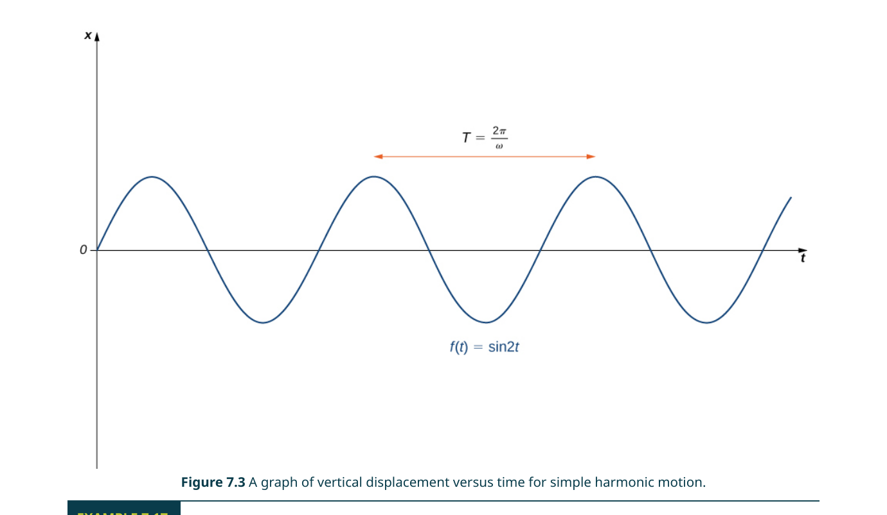
許多教科書偏愛使用 $y=A\sin(\omega t+\phi)$ 的形式，因為它直接顯示了振幅 $A$。從 $c_1\cos\omega t+c_2\sin\omega t$ 轉換到 $A\sin(\omega t+\phi)$ 的公式是：
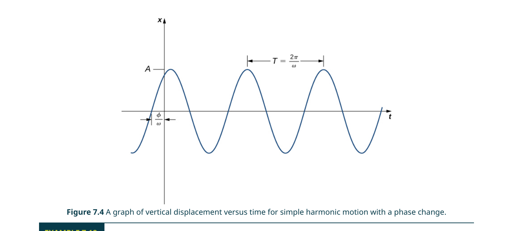
📝 範例 7.17：簡諧運動實例
一個重 2 lb 的物體將彈簧拉伸 6 in。若將物體從平衡位置以 16 ft/sec 的向上速度釋放，求運動方程式與週期。解：由 Hooke 定律：$mg=k\cdot\Delta\ell$ → $2=k\cdot 0.5$ → $k=4$ lb/ft。
$m=W/g=2/32=1/16$ slug。微分方程：$\frac{1}{16}y''+4y=0$ → $y''+64y=0$。
$\omega^2=64$ → $\omega=8$。通解：$y=c_1\cos 8t+c_2\sin 8t$。
初值：$y(0)=0$ → $c_1=0$；$y'(0)=-16$（向上為負）→ $8c_2=-16$ → $c_2=-2$。
因此 $y(t)=-2\sin 8t$。週期 $T=2\pi/8=\pi/4\approx 0.785$ 秒。
阻尼振動（Damped Vibrations）
現實中不存在無阻尼系統。空氣阻力、內部摩擦、或故意安裝的避震器（dashpot）都會產生一個與速度成正比的阻尼力 $-by'$。完整的阻尼振動方程為：
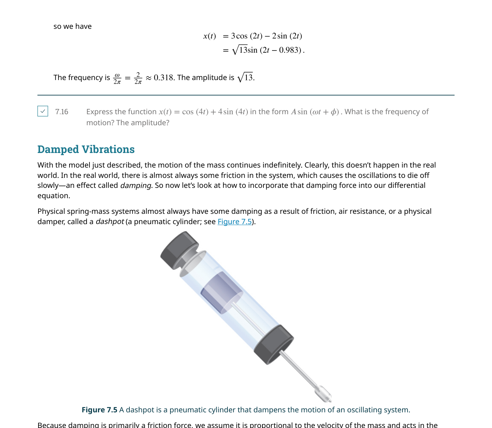
| 條件 | 系統類型 | 行為 | 通解形式 |
|---|---|---|---|
| $b^2 > 4mk$ | 過阻尼 | 不振盪，緩慢回到平衡 | $y=c_1e^{\lambda_1 t}+c_2e^{\lambda_2 t}$（$\lambda_1,\lambda_2<0$） |
| $b^2 = 4mk$ | 臨界阻尼 | 不振盪，最快回到平衡 | $y=c_1e^{\lambda t}+c_2te^{\lambda t}$（$\lambda<0$） |
| $b^2 < 4mk$ | 欠阻尼 | 振盪但振幅逐漸衰減 | $y=e^{\alpha t}(c_1\cos\beta t+c_2\sin\beta t)$（$\alpha<0$） |
臨界阻尼的獨特之處在於：它使系統在最短時間內回到平衡位置而不會振盪超過。這對汽車避震器至關重要——你希望車輪在越過顛簸後快速回到路面，而不是來回彈跳（欠阻尼），也不希望像船一樣慢慢晃回來（過阻尼）。很多高階避震器的設計目標就是盡可能接近臨界阻尼。
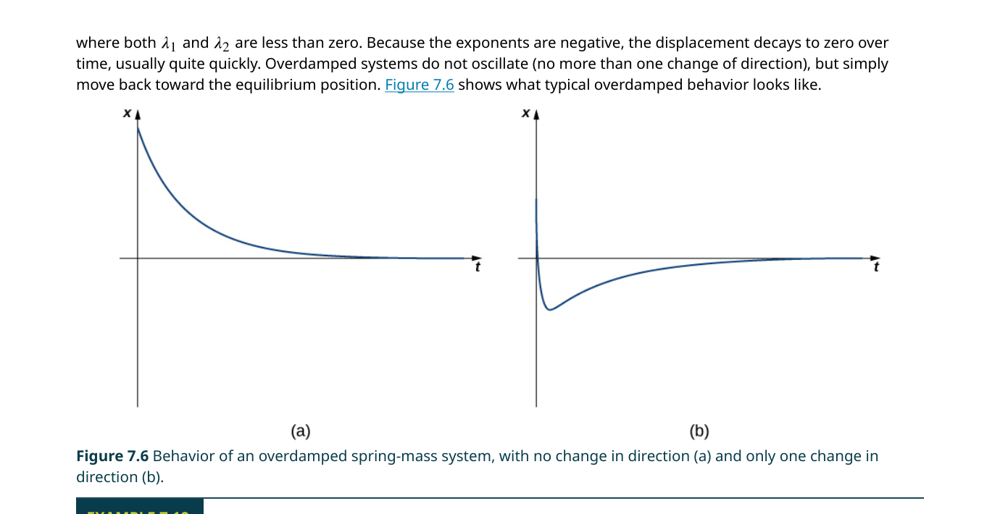
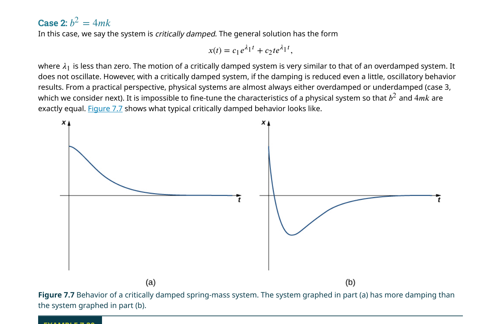
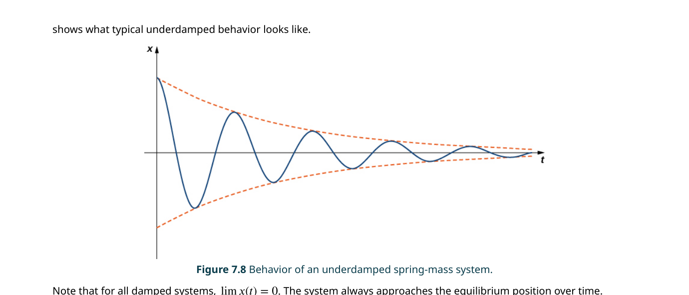
強迫振動與共振（Forced Vibrations & Resonance）
當有外部力量持續作用於系統時（例如路面顛簸對汽車懸吊的持續衝擊），方程變為非齊次：$my''+by'+ky=F(t)$。此時通解 = 暫態解（transient） + 穩態解（steady-state）。暫態解隨時間衰減（只要 $b>0$），長期行為完全由穩態解主導。
當外力頻率接近系統的自然頻率 $\omega_0=\sqrt{k/m}$ 時，振幅急劇增大。在無阻尼（或阻尼極小）的極端情況下，振幅會無限制增長——這就是共振（resonance）。1940 年 Tacoma Narrows 橋的倒塌就是共振的經典案例：風力的頻率恰好匹配橋樑的自然振動頻率，導致橋面劇烈扭轉最終斷裂。另一個例子：歌劇歌手可以透過唱出匹配酒杯自然頻率的音符來震碎酒杯。
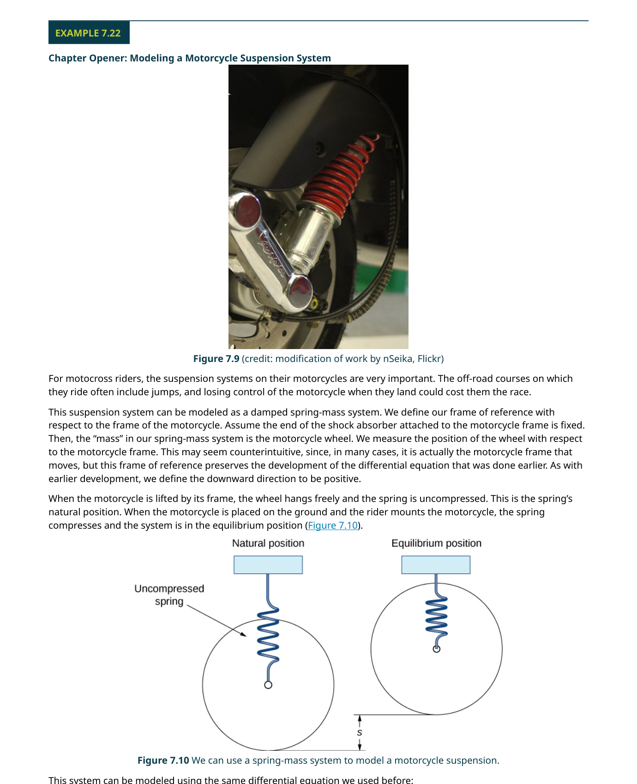
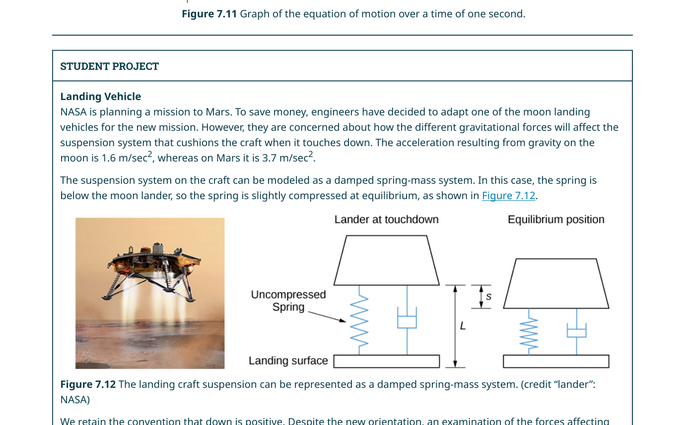
📝 範例 7.22：摩托車懸吊建模
一輛越野摩托車（連同騎士）重 384 lb（12 slugs）。懸吊系統壓縮 4 in（1/3 ft）後達到平衡，阻尼力為速度的 240 倍。(a) 建立微分方程。
(b) 若著地時（$t=0$）車輪在平衡位置下方 4 in，以 10 ft/sec 向下速度著地，求運動方程式。
解：
(a) $mg=k\Delta\ell$ → $384=k\cdot(1/3)$ → $k=1152$ lb/ft。
$12y''+240y'+1152y=0$ → 除以 12：$y''+20y'+96y=0$。
(b) 特徵方程 $\lambda^2+20\lambda+96=0$ → $(\lambda+8)(\lambda+12)=0$ → $\lambda=-8,-12$（過阻尼）。
通解：$y=c_1e^{-8t}+c_2e^{-12t}$。
初值：$y(0)=1/3$，$y'(0)=10$。解出 $c_1=\frac{7}{6}$、$c_2=-\frac{5}{6}$。
運動方程：$y(t)=\frac{7}{6}e^{-8t}-\frac{5}{6}e^{-12t}$。
RLC 串聯電路
一個包含電阻（R）、電感（L）和電容（C）的串聯電路由完全相同的微分方程描述：
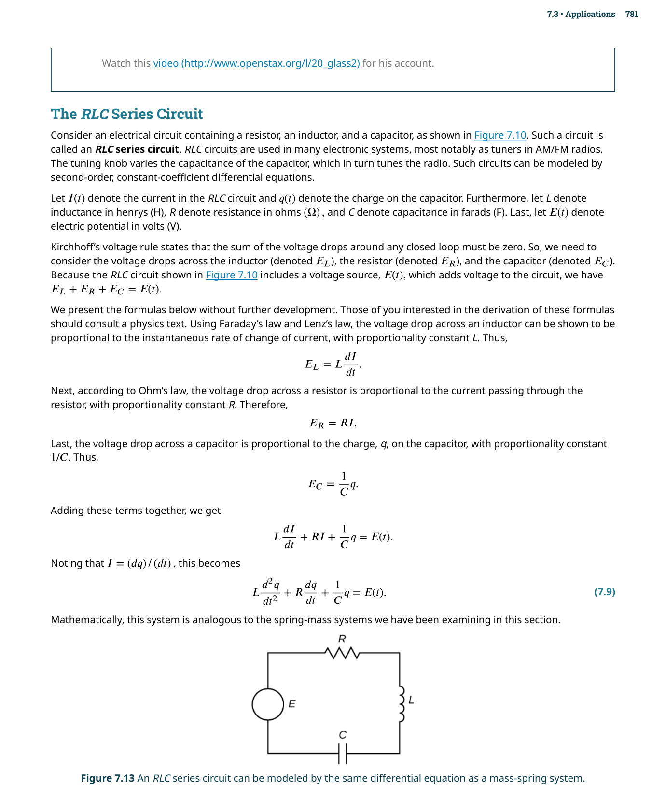
物理學中有一個深刻的洞察：完全不同的物理系統可能由完全相同的數學方程描述。彈簧-質量系統（機械領域）和 RLC 電路（電學領域）就是這樣一對「數學雙胞胎」。這意味著你在機械振動中學到的所有直覺——過阻尼、欠阻尼、共振——都可以直接搬到電路分析中使用，無需重新學習。
📝 範例 7.24：RLC 電路分析
在一個 RLC 串聯電路中，$L=1$ H、$R=2\ \Omega$、$C=1/5$ F、$E(t)=50$ V。初始電荷 $q(0)=0$ C、初始電流 $i(0)=9$ A。求 $q(t)$。解：方程：$q''+2q'+5q=50$。
互補解：$\lambda^2+2\lambda+5=0$ → $\lambda=-1\pm 2i$ → $q_c=e^{-t}(c_1\cos 2t+c_2\sin 2t)$。
特解：$r(t)=50$ 為常數，猜 $q_p=A$。代入得 $5A=50$ → $A=10$。
通解：$q=e^{-t}(c_1\cos 2t+c_2\sin 2t)+10$。
初值 $q(0)=0$：$c_1+10=0$ → $c_1=-10$。
$i(t)=q'(t)$：$i(0)=9$，計算後得 $c_2=-\frac{1}{2}$。
因此 $q(t)=e^{-t}(-10\cos 2t-\frac{1}{2}\sin 2t)+10$。隨著 $t\to\infty$，暫態衰減，電容最終趨近穩態電荷 10 C。
🎮 互動模型：阻尼彈簧動畫
調整質量 m、阻尼 c、彈簧常數 k，觀察過阻尼/臨界阻尼/欠阻尼三種行為。
7.4 微分方程的級數解（Series Solutions of Differential Equations）
不是所有的微分方程都能用封閉形式（初等函數組合）表示其解。在這種情況下，我們求助於冪級數（power series）——假設解可以寫成無窮級數 $\sum_{n=0}^{\infty} a_n x^n$，然後逐項微分代入，比較同次冪的係數，得到係數之間的遞迴關係。
- 假設解的形式：$y = \sum_{n=0}^{\infty} a_n x^n$
- 逐項微分：$y' = \sum_{n=1}^{\infty} n a_n x^{n-1}$，$y'' = \sum_{n=2}^{\infty} n(n-1) a_n x^{n-2}$
- 代入微分方程，重新索引使各項的冪次一致
- 合併為一個 $\sum$，令每個 $x^n$ 的係數等於零
- 得到遞迴關係（recurrence relation），解出 $a_n$
- 寫出級數形式的解
冪級數解法最關鍵也最容易出錯的步驟是重新索引（re-index）。例如 $\sum_{n=2}^{\infty} n(n-1)a_n x^{n-2}$ 可以藉由令 $k=n-2$ 改寫為 $\sum_{k=0}^{\infty} (k+2)(k+1)a_{k+2} x^k$。這樣所有級數的 $x$ 的冪次對齊後才能合併。
本節只討論「形式上」的冪級數解法，但實際上並非所有的冪級數解都在整個實數軸上收斂。本節的範例都是精心挑選的——它們的冪級數解恰好對所有 $x$ 都收斂。更一般的理論（例如 Frobenius 方法、正則奇點分析）需要專門的微分方程課程才能完整涵蓋。初學者只需理解：級數解法能給出形式上的解，而在應用中通常需要截斷（取有限項）來獲得近似。
📝 範例 7.25a：級數解初體驗
求 $y''-y=0$ 的冪級數解。解：令 $y=\sum_{n=0}^{\infty} a_n x^n$，則 $y'=\sum_{n=1}^{\infty} n a_n x^{n-1}$，$y''=\sum_{n=2}^{\infty} n(n-1)a_n x^{n-2}$。
代入：$\sum_{n=2}^{\infty} n(n-1)a_n x^{n-2} - \sum_{n=0}^{\infty} a_n x^n = 0$。
對第一項重索引（$k=n-2$）：$\sum_{k=0}^{\infty} (k+2)(k+1)a_{k+2} x^k - \sum_{k=0}^{\infty} a_k x^k = 0$。
合併：$\sum_{k=0}^{\infty} [(k+2)(k+1)a_{k+2} - a_k] x^k = 0$。
因此對所有 $k$：$(k+2)(k+1)a_{k+2} = a_k$，即 $a_{k+2} = \frac{a_k}{(k+2)(k+1)}$。
偶數項：$a_2=\frac{a_0}{2!}$、$a_4=\frac{a_0}{4!}$、… $a_{2n}=\frac{a_0}{(2n)!}$。
奇數項：$a_3=\frac{a_1}{3!}$、$a_5=\frac{a_1}{5!}$、… $a_{2n+1}=\frac{a_1}{(2n+1)!}$。
因此 $y = a_0\sum_{n=0}^{\infty}\frac{x^{2n}}{(2n)!} + a_1\sum_{n=0}^{\infty}\frac{x^{2n+1}}{(2n+1)!}$。
這正是我們熟悉的 $y=a_0\cosh x + a_1\sinh x$（或等價地 $y=c_1e^x+c_2e^{-x}$）的級數展開——級數解與封閉形式解完全一致。
Bessel 方程式
作為級數解法的重要應用，我們簡要介紹 Bessel 方程式（Bessel equation）。$n$ 階 Bessel 方程式為：
📝 範例 7.26：零階 Bessel 方程
求 $x^2 y'' + x y' + x^2 y = 0$（$n=0$ 的 Bessel 方程）的冪級數解。解：假設 $y=\sum_{n=0}^{\infty} a_n x^n$，代入後經過重索引和係數比較，得到：
$a_1=0$（因此所有奇數項皆為零），$a_{n+2} = -\frac{a_n}{(n+2)^2}$（$n\geq 0$）。
設 $a_0=1$，則 $a_2=-\frac{1}{4}$、$a_4=\frac{1}{64}$、$a_6=-\frac{1}{2304}$、…。
零階 Bessel 函數（第一類）：$J_0(x) = \sum_{m=0}^{\infty} \frac{(-1)^m}{(m!)^2}\left(\frac{x}{2}\right)^{2m}$。
$J_0(x)$ 的圖形像一個衰減的餘弦波——它在 $x\approx 2.405$ 處首次穿過零點，這個數值在圓形鼓面振動的基頻計算中至關重要。
$J_0(x)$ 描述了一個圓形薄膜（例如鼓面）的軸對稱振動模式。當你敲擊鼓面中心時，鼓面的變形形狀正是 $J_0$ 函數的圖形。$J_0$ 的第一個零點 $x\approx 2.405$ 決定了鼓面的基頻——這也是為什麼不同大小的鼓發出不同音高的原因。級數解在這裡不只是數學上的好奇，而是理解和預測真實物理現象的關鍵工具。
何時需要級數解法：當微分方程的係數不是常數（例如 $x^2 y'' + xy' + (x^2 - n^2)y = 0$，Bessel 方程），特徵方程式法不再適用。級數解法假設解為冪級數 $y = \sum a_n x^n$，代入方程後比較同次項係數，得到 $a_n$ 的遞迴關係。
級數解的價值：許多「特殊函數」（Bessel 函數、Legendre 多項式、Hermite 多項式）都是透過級數解法定義的。這些函數在物理中無所不在——Bessel 函數描述鼓面振動、Legendre 多項式出現在球對稱問題、Hermite 多項式是量子諧振子的解。掌握級數解法意味著能處理標準方法無法觸及的重要方程式。
📋 關鍵概念回顧（Key Concepts）
- 二階線性齊次方程：$ay''+by'+cy=0$ 的通解由特徵方程 $ar^2+br+c=0$ 的根決定——兩個實根、一個重根、或一對共軛複根
- 特徵方程三種情形：① $b^2-4ac>0$：$y=c_1e^{r_1x}+c_2e^{r_2x}$（兩個不相等的實根）；② $b^2-4ac=0$：$y=(c_1+c_2x)e^{rx}$（重根）；③ $b^2-4ac<0$：$y=e^{\alpha x}(c_1\cos\beta x+c_2\sin\beta x)$（共軛複根）
- 疊加原理：若 $y_1,y_2$ 是齊次方程的解，則 $c_1y_1+c_2y_2$ 也是解——這是線性系統的核心性質
- 非齊次方程的通解：$y = y_c + y_p$，其中 $y_c$ 是齊次解（complementary solution），$y_p$ 是任一特解（particular solution）
- 待定係數法：根據 $r(x)$ 的形式猜測 $y_p$ 的結構——若猜測項與 $y_c$ 中的項重疊，乘 $x$（或 $x^2$）直到不再重疊（「撞車規則」）
- 參數變異法：$y_p = u_1y_1+u_2y_2$，其中 $u_1',u_2'$ 由聯立方程組解出——適用於 $r(x)$ 無法用待定係數法處理的情況
- 簡諧運動：$mx''+kx=0$（無阻尼）→ $x(t)=A\cos(\omega t)+B\sin(\omega t)$，其中 $\omega=\sqrt{k/m}$ 為自然頻率
- 阻尼分類：$mx''+cx'+kx=0$：① $c^2>4mk$→過阻尼（不震盪，緩慢返回平衡）；② $c^2=4mk$→臨界阻尼（最快返回平衡）；③ $c^2<4mk$→欠阻尼（衰減震盪）
- 共振：$mx''+cx'+kx=F_0\cos(\omega t)$——當外力頻率 $\omega$ 接近自然頻率 $\omega_0$ 時，振幅急劇增大
- 級數解法：假設 $y=\sum a_n x^n$ 代入 ODE，從最低次冪開始匹配係數得到遞迴關係——Bessel 方程 $x^2y''+xy'+(x^2-\nu^2)y=0$ 是經典範例
📐 關鍵公式（Key Equations）
| 公式 | 說明 |
|---|---|
| $$ar^2+br+c=0$$ | 特徵方程（來自 $ay''+by'+cy=0$ 代入 $y=e^{rx}$） |
| $$y = c_1 e^{r_1 x} + c_2 e^{r_2 x}$$ | 兩個不等實根的通解 |
| $$y = (c_1 + c_2 x)e^{rx}$$ | 重根的通解 |
| $$y = e^{\alpha x}(c_1\cos\beta x + c_2\sin\beta x)$$ | 共軛複根 $\alpha\pm i\beta$ 的通解 |
| $$y = y_c + y_p$$ | 非齊次方程通解結構 |
| $$u_1' = \frac{-y_2 r}{W},\; u_2' = \frac{y_1 r}{W},\; W=y_1y_2'-y_1'y_2$$ | 參數變異法（Wronskian $W$） |
| $$mx'' + cx' + kx = F(t)$$ | 彈簧-質量-阻尼系統 |
| $$Lq'' + Rq' + \frac{q}{C} = E(t)$$ | RLC 串聯電路（與彈簧系統數學同構） |
本章摘要（Chapter Summary）
7.1 二階線性方程
• 線性判斷：$y$ 及其導數僅以一次冪出現
• 特徵方程式 $a\lambda^2+b\lambda+c=0$
• 三種根 → 三種通解形式
• 初值問題必有唯一解；邊值問題可能無解或多解
7.2 非齊次線性方程
• 通解結構：$y=y_c+y_p$
• 待定係數法：$r(x)$ 為多項式/指數/三角時猜測
• 參數變異法：$y_p=uy_1+vy_2$，適用任意 $r(x)$
• 撞車規則：猜測與 $y_c$ 重疊時乘以 $x$
7.3 物理應用
• 簡諧運動：$y''+\omega^2 y=0$
• 阻尼振動：$b^2-4mk$ 決定過阻尼/臨界阻尼/欠阻尼
• 強迫振動：暫態解 + 穩態解
• RLC 電路與機械系統數學等價
7.4 級數解法
• 冪級數假設 → 逐項微分 → 比較係數 → 遞迴關係
• Bessel 方程：$x^2y''+xy'+(x^2-n^2)y=0$
• $J_0(x)$：零階第一類 Bessel 函數
• 級數解是精確解的另一種表示形式
初學者常見錯誤
看到 $y''+y^2=0$ 就想套特徵方程式——這完全行不通。特徵方程式法只適用於常係數齊次線性方程。任何含 $y^2$、$(y')^2$、$\sin y$、$yy'$ 等非線性項的方程都無法使用特徵方程式。第一步永遠是：確認方程是否為線性。
特徵方程式 $a\lambda^2+b\lambda+c=0$ 中的 $a,b,c$ 來自標準形式 $ay''+by'+cy=0$。如果方程寫成 $y''+by'+cy=0$ 或 $ay''+cy=0$（$b=0$），不要忘記對應的正確位置。特別是：$y''+4y=0$ 對應的特徵方程是 $\lambda^2+4=0$（$\lambda=\pm 2i$），而不是 $\lambda^2+4\lambda=0$。
當特徵根為 $\alpha\pm i\beta$ 時，通解是 $y=e^{\alpha x}(c_1\cos\beta x+c_2\sin\beta x)$。初學者最常犯的錯誤是漏掉 $e^{\alpha x}$——直接寫成 $c_1\cos\beta x+c_2\sin\beta x$。記住：$e^{\alpha x}$ 代表了振幅的增長（$\alpha>0$）或衰減（$\alpha<0$），是解的關鍵部分。只有在 $\alpha=0$（純虛根）時才可以省略。
當 $r(x)=\sin 2x$ 時，你必須猜測 $y_p=A\cos 2x+B\sin 2x$（兩項都要），即使原方程只出現 $\sin$。原因是：$\sin$ 的導數會產生 $\cos$，所以如果只猜 $\sin$，代入後無法匹配所有的項。同理，當 $r(x)$ 是多項式時，猜測必須包含所有低次項（包括常數項），即使 $r(x)$ 中沒有常數項。
阻尼判別式是 $b^2-4mk$，不是 $b^2-4ac$（後者是特徵方程式的係數記號，其中 $a=m$、$c=k$ 在本節物理脈絡中對應 $m$ 和 $k$）。最容易混淆的是：在數學章節中我們寫 $ay''+by'+cy=0$，判別式是 $b^2-4ac$；在物理章節中我們寫 $my''+by'+ky=0$，判別式是 $b^2-4mk$。兩者本質相同，但變數名稱的切換常常導致代錯數字。
✅ 自我檢測（Self-Check）
完成以下題目檢驗你對本章核心概念的掌握程度。點擊展開查看答案。
題 1：相異實根（特徵方程法）
解二階齊次線性微分方程：$y'' - 5y' + 6y = 0$。
答案：
特徵方程：$r^2 - 5r + 6 = 0$，因式分解 $(r-2)(r-3) = 0$，根為 $r = 2, 3$（相異實根）。
通解：$y = C_1 e^{2x} + C_2 e^{3x}$。
題 2：重根情形
解 $y'' + 4y' + 4y = 0$。
答案：
特徵方程：$r^2 + 4r + 4 = 0$，$(r+2)^2 = 0$，$r = -2$（重根）。
通解：$y = C_1 e^{-2x} + C_2 x e^{-2x}$。
題 3：共軛複根情形
解 $y'' + 2y' + 5y = 0$。
答案：
特徵方程：$r^2 + 2r + 5 = 0$。判別式 $\Delta = 4 - 20 = -16$。
$r = \frac{-2 \pm \sqrt{-16}}{2} = -1 \pm 2i$。$\alpha = -1$，$\beta = 2$。
通解：$y = e^{-x}(C_1 \cos 2x + C_2 \sin 2x)$。
題 4：待定係數法
求非齊次方程 $y'' - 3y' + 2y = e^x$ 的通解。
答案：
齊次部分：$r^2 - 3r + 2 = 0$，$(r-1)(r-2)=0$，$y_h = C_1 e^x + C_2 e^{2x}$。
注意到 $e^x$ 與齊次解中的 $e^x$ 衝突（$r=1$ 是單根），設 $y_p = Axe^x$。
代入解得 $A = -1$。因此 $y_p = -xe^x$。
通解：$y = C_1 e^x + C_2 e^{2x} - xe^x$。
題 5：阻尼分類
對於質量-彈簧系統 $my'' + by' + ky = 0$，其中 $m=1$，$k=4$。判斷當 (a) $b=5$；(b) $b=4$；(c) $b=2$ 時系統的阻尼類型（過阻尼/臨界阻尼/欠阻尼）。
答案：
判別式 $\Delta = b^2 - 4mk = b^2 - 16$。
(a) $b=5$：$\Delta = 25-16 = 9 > 0$ → 過阻尼（相異實根，無振盪衰減）。
(b) $b=4$：$\Delta = 16-16 = 0$ → 臨界阻尼（重根，最快回到平衡）。
(c) $b=2$：$\Delta = 4-16 = -12 < 0$ → 欠阻尼（共軛複根，衰減振盪）。
延伸資源
- Second-Order Linear Differential Equations 互動教學 — 深入了解二階線性方程
- Second-Order Differential Equations 討論 — 更多二階方程的範例與討論
- Forced Vibrations 模擬 — 互動式強迫振動模擬
- Tacoma Narrows Bridge 倒塌事件 — 共振現象的經典工程案例
- MIT OpenCourseWare: 18.03 Differential Equations — 涵蓋 Bessel 函數、Laplace 轉換等進階主題